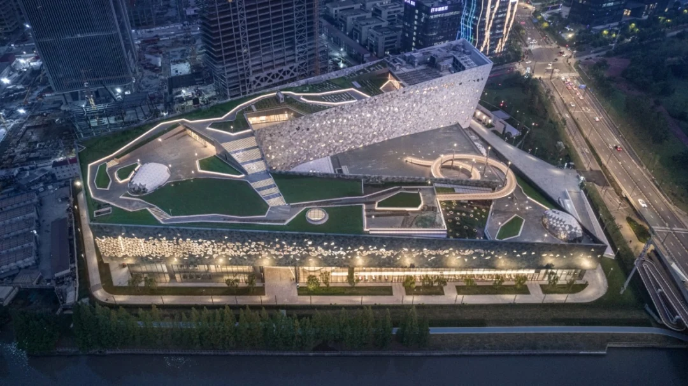
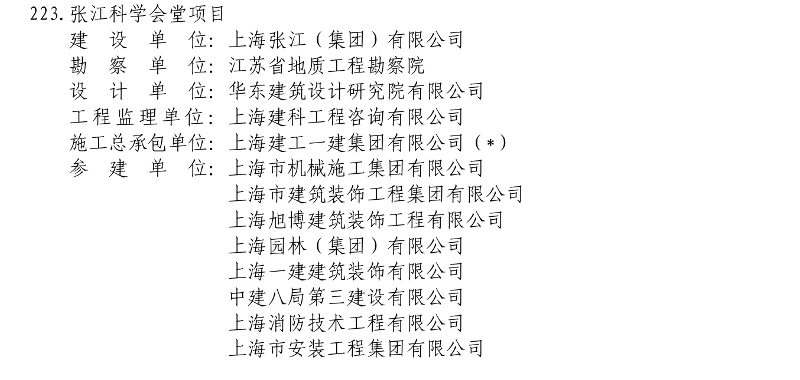

上海建科工程咨询有限公司
上海建科咨询集团旗下工程咨询企业，服务覆盖项目策划、建设实施及运营维护阶段，提供工程监理、项目管理、设计、招标与造价等咨询业务。
本站推荐分
8.23/ 10 分
合作资料评分 8.23 / 10
项目与资质图册





监理项目记录 11 项
- 医疗建筑 · 上海市长宁区妇幼保健院改扩建工程 政府公开资料
- 体育建筑 · 上海国际体操中心整体改造工程 政府公开资料
- 房屋建筑工程 · 北京环球影城主题公园（一期）项目 工程监理 建设单位：北京国际度假区有限公司 2022—2023年度第二批国家优质工程奖候选项目名单
- 交通工程 · 盐城市铁路综合客运枢纽西广场工程 工程监理 建设单位：盐城市铁路投资发展有限公司 2022—2023年度第二批国家优质工程奖候选项目名单
- 房屋建筑工程 · 张江科学会堂项目 工程监理 建设单位：上海张江（集团）有限公司 2022—2023年度第二批国家优质工程奖候选项目名单
- 市政基础设施工程 · 上海市虹梅南路—金海路通道越江段新建工程 工程监理 建设单位：上海黄浦江越江设施投资建设发展有限公司 2020—2021年度第一批国家优质工程奖入选工程名单
- 轨道交通 · 济南轨道交通1号线工程 工程监理 建设单位：济南轨道交通集团有限公司 2020—2021年度第一批国家优质工程奖入选工程名单
- 房屋建筑工程 · 世博会地区E06—04A地块新建项目5#办公塔楼 工程监理 建设单位：上海鼎保置业有限公司 2020—2021年度第一批国家优质工程奖入选工程名单
- 房屋建筑工程 · 华泰金融大厦项目 工程监理 建设单位：华泰世博置业有限公司 2020—2021年度第一批国家优质工程奖入选工程名单
- 房屋建筑工程 · 南京青奥中心双塔楼及裙房工程 工程监理 建设单位：南京青奥城建设发展有限责任公司 2020—2021年度第一批国家优质工程奖入选工程名单
- 房屋建筑工程 · 长沙梅溪湖国际文化艺术中心 工程监理 建设单位：梅溪湖投资（长沙）有限公司 2020—2021年度第一批国家优质工程奖入选工程名单
企业概况
| 企业全称 | 上海建科工程咨询有限公司 |
|---|---|
| 简称 / 曾用名 | 建科咨询 |
| 地区 | 上海 · 上海市 |
| 监理资质记录 | 工程监理综合资质 |
| 主要业务 | 工程监理、全过程工程咨询、项目管理、工程设计、招标与造价咨询 |
| 企业官网 | 访问上海建科工程咨询官网 |
业务联系
电话：021-64687800
地址：上海市徐汇区宛平南路75号1号楼2楼
资料来源
- 上海建科工程咨询官网·业务与联系方式 企业公开资料
- 2022—2023年度第二批国家优质工程奖候选项目名单 行业协会资料
- 2020—2021年度第一批国家优质工程奖入选工程名单 行业协会资料